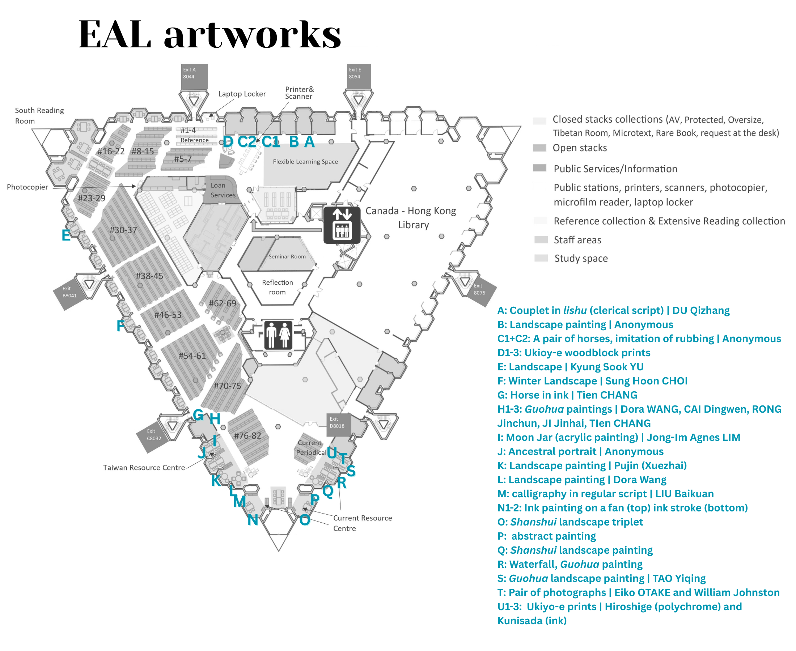

Chinese Art Masterpieces in Print: History, Lineage, Legacy
傳承經典: 中國古代書畫名作復刻品
Exhibited Artists found in Gu Shi Huapu 顧氏畫譜
Song 宋: LI Gonglin 李公麟 | SU Hanchen 蘇漢臣 | XIA Gui 夏圭
Yuan 元: ZHAO Mengfu | HUANG Gongwang
Ming 明: SHEN Zhou 沈周 | WEN Zhengming 文徵明 | TANG Yin 唐寅 | QIU Ying 仇英
Terms and Concepts
EAL Artworks on Permanent Display
- A: Couplet in lishu 隸書 (Clerical Script)| DU Qizhang 杜其章 | 1934
- B: Shanshui landscape painting | Inscription by Langxi 朗𠧧
- C1+C2: A pair of horses in the style of rubbing | Anonymous
- D: Ukiyo-e prints
- D1: Two Warriors | KUNIYOSHI Utagawa 歌川国芳
- D2: Two Women with lantern (from the Tale of Genji) | KUNISADA II, Utagawa 二代目歌川国貞 | c. 1857
- D3: Ichikawa | KUNISADA II, Utagawa 二代目歌川国貞 | c. 1865
- E: One Summer Afternoon 한여름의 오후 Han yŏrŭm ŭi ohu | Kyung Sook YU 유경숙
- F: Winter Landscape 설경 Sŏlgyŏng | Sung Hoon CHOI 최성훈
- G: Ink painting of horse 飛兔玉津 | Tien CHANG 章天柱
- H: Guohua paintings from Chinese Arts Exhibition, held by the Cheng Yu Tung East Asian Library for Asian Heritage Month 2011 | Dora Wang, CAI Dingwen, RONG Jungchun, JI Jinhai, and Tien CHANG 王苗德貞，蔡鼎文，榮京春，紀金海，章天柱
- I: The Moon Jar | acrylic painting | Jong-Im Agnes LIM 임종임
- J: Portrait of an official | Anonymous | Ming-Qing Dynasty
- K: Landscape painting | Pujin (Xuezhai) 溥伒 (雪齋)
- L: Landscape painting | Dora Wang 王苗德貞
- M: Calligraphy in kaishu 楷書 (Regular Script) | LIU Baikuan 劉白寬
- N1: Guohua painting on a fan | Anonymous
- N2: Ink stroke | Anonymous
- O: Shanshui landscape painting triplet | Anonymous
- P: Abstract ink painting | Anonymous
- Q: Shanshui landscape painting | Anonymous | 19-20C
- R: Waterfall Guohua painting | Anonymous
- S: Guohua landscape painting | TAO Yiqing 陶一清
- T: Eiko in Fukushima, Namie, Ukedo Beach, 27 June 2017, No. 382 (top) + Eiko in Fukushima, Hisanohama Fishing Harbor, 25 June 2017, No. 391 (bottom) | Eiko OTAKE and William Johnston
- U: Ukiyo-e prints
- U1: Untitled (from Fifty-three Stages of the Tokaido) | Hiroshige
- U2: River Crossing (from Fifty-three Stages of the Tokaido) | Hiroshige
- U3: Untitled | Kunisada | c.1860s
Bibliography
Chinese Dynasties
Shang 商 c. 1600-1046 BCE
Zhou 周 c. 1046-256 BCE
Qin 秦 c. 221-206 BCE
Han 漢 c. 206 BCE-220 CE
Six Dynasties 魏晉南北朝 c. 220-589 CE
Sui 隋 c. 581-618 CE
Tang 唐 c. 618-906 CE
Five Dynasties 五代 c. 907-960 CE
Song 宋 c. 960-1279 CE
Yuan 元 c. 1279-1368 CE
Ming 明 c. 1368-1644 CE
Qing 清 c. 1644-1912 CE